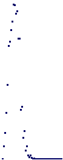
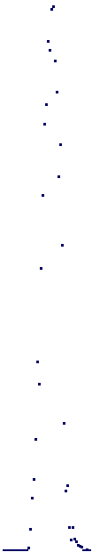

|
|||
|---|---|---|---|
| Homology of random graphs and their nerves |
|||
| For
a
positive
integer
n
and
probability
p
we
denote
by G(n,p) the
Erdos–Renyi random graph. This has n vertices with each potential edge
included independently with probability p. The following commands construct low dimensions of the simlicial nerve NG(n,p) of the random graph on n=100 vertices for probability values in the range 0<p<0.5. By definition this nerve has n vertices and one k-simplex for each collection of k+1 vertices spanning a complete subgraph of G(n,p). Finally, for k=0,1,2,3,4 , the integral homology Hk(NG(n,p),Z) is computed and stored in a list H. |
|||
| H:=[];; n:=100;; for p in [1..50]*(1/100) do K:=RandomSimplicialGraph(n,p);; G:=GraphOfSimplicialComplex(K);; N:=SimplicialNerveOfGraph(G,5);; Y:=SimplicialComplexToRegularCWComplex(N);; CriticalCellsOfRegularCWComplex(Y);; Add(H, List([0..4],i->Homology(Y,i)) ); od; |
|||
| The following command shows that no torsion occurs in any of the computed homology groups Hk(NG(n,p),Z) . | |||
| gap>
SSortedList(Flat(H)); [ 0 ] |
|||
| It
is shown in [ M. Kahle and E. Meckes, "Limit theorems for Betti numbers
of random simplicial complexes", HHA, 15(1), 2013, 343-374] that the
Betti numbers bk(n,p)= rank( Hk(NG(n,p),Z)
)
are normally distributed for large n. The distribution is illustrated by the following commands which plot bk(n,p) against p for fixed n=100 and k=0,1,2,3,4. |
|||
| gap>
B:=List([1..5],k->List(List(H,h->h[k]),x->Length(x)));; gap> for k in [0,1,2,3] do > A:=NullMat(Maximum(B[k+1])+5,100);; > for P in [1..50] do > A[B[k+1][P]+1][2*P]:=1; > od; > M:=ThickenedPureCubicalComplex(PureCubicalComplex(TransposedMat(Reversed(A))));; > ViewPureCubicalComplex(M); > od;
 
|
|||
| Homology of random simplicial 2-complexes |
|||
| For
a positive integer n and probability p we denote by Y(n,p) the
Linial-Meshulam random simplicial 2-complex. Its 1-skeleton is the
complete graph on n vertices; each possible 2-simplex is included
independently with probability p. The following commands compute the Betti numbers rank( H1(Y(n,p),Z)
)
for n=200 vertices and for p= 1/200, 2/200, 3/200, ... , 50/200. |
|||
| L:=[]; n:=200;; for p in [1..50]*(1/200) do K:=RandomSimplicialTwoComplex(n,p); H:=Homology(K,1); Add(L,H); od; List(L,x->Length(x)); [ 13065, 6597, 1299, 393, 138, 48, 16, 7, 1, 0, 0, 0, 0, 0, 0, 0, 0, 0, 0, 0, 0, 0, 0, 0, 0, 0, 0, 0, 0, 0, 0, 0, 0, 0, 0, 0, 0, 0, 0, 0, 0, 0, 0, 0, 0, 0, 0, 0, 0, 0 ] |
|||
| The
following additional command shows that there is no torsion in any
of
the computed
homology groups H1(Y(n,p),Z) . |
|||
| gap>
SSortedList(Flat(L)); [ 0 ] |
|||
| Fundamental groups of random simplicial
2-complexes |
|||
| The
following commands compute presentations for the fundamental groups of
Y(n,p) for n=60 vertices and probabilities in the range 0<p<0.25.
The commands also list the number of generators for each fundamental group, and show that in most cases there are no relators between generators. Thus, in most (and possibly all) cases, the fundamental group is free; for large p the fundamental group is trivial |
|||
| gap>
L:=[];; gap> n:=60;; gap> for p in [1..50]*(1/200) do > K:=RandomSimplicialTwoComplex(n,p);; > Add(L,FundamentalGroup(K)); > od; gap> NumbersOfGenerators:=List(L,g->Length(GeneratorsOfGroup(g))); [ 1542, 1357, 1206, 1024, 822, 647, 502, 344, 195, 110, 82, 57, 39, 18, 9, 14, 16, 15, 2, 4, 3, 2, 2, 2, 0, 0, 2, 1, 0, 0, 0, 1, 0, 0, 0, 0, 0, 0, 0, 0, 0, 0, 0, 0, 0, 0, 0, 0, 0, 0 ] gap> NumbersOfRelations:=List(L,g->Length(RelatorsOfFpGroup(g))); [ 0, 0, 0, 0, 0, 0, 0, 0, 37, 0, 0, 0, 0, 0, 0, 0, 0, 0, 0, 0, 0, 0, 0, 0, 0, 0, 0, 0, 0, 0, 0, 0, 0, 0, 0, 0, 0, 0, 0, 0, 0, 0, 0, 0, 0, 0, 0, 0, 0, 0 ] |
|||
|